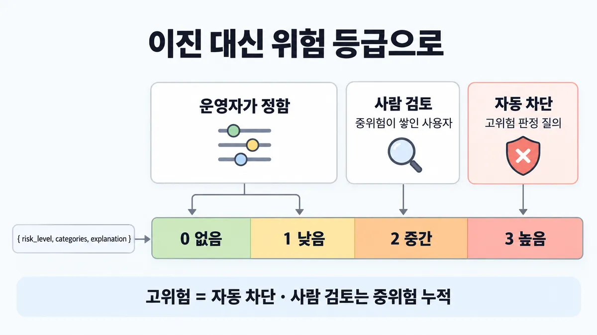
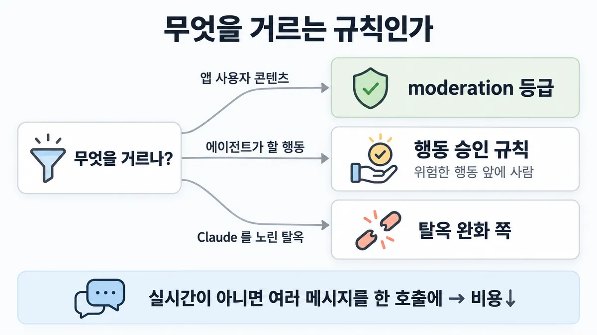

■ moderation 위험 등급
왜 배우나 — 시험이 요구하는 것
시험 목표 5.3 사람 검증 전략 · D5 규정·안전 14%Apply human-in-the-loop validation strategies
이 개념으로 푸는 판단 (할 수 있어야 하는 것)
- 5.3③ 검열 분류기가 "고위험" 판정 — 사람 대기열로 넘길까? — 위험 등급별 처리 (자동 차단 / 사람 검토 / 통과)
한눈에
사용자 콘텐츠 moderation(검열)을 허용/차단 이진 분류 대신 여러 위험 등급으로 → moderation 강도를 조절. 예 : 고위험(high-risk) 판정 질의는 자동 차단, 중위험 질의가 많은 사용자는 사람 검토 대상으로 표시(flag) ✓ 확인 (2026-09-28 조회)
판정은 JSON(위험 등급 · 위반 범주 · 설명)으로 받아 코드가 분기 ✓ 확인. 공식 예시 등급 = 0 없음 · 1 낮음 · 2 중간 · 3 높음, 기준 = "검열해야 한다는 확신", 설명은 0 보다 클 때만 ✓ 확인
비유 명백한 공격 트래픽은 WAF 가 자동 차단, 애매한 요청이 쌓인 IP 는 보안 관제 분석가 큐로


ELI5
학교 게시판에 붙는 쪽지를 고르는 방법이에요.
- 누가 봐도 무서운 협박 쪽지는 바로 떼요.
- 애매한 쪽지를 자꾸 붙이는 아이는 선생님이 따로 봐요.
- 모든 쪽지를 선생님이 다 보면 선생님이 못 따라가요.
- 떼인 쪽지 주인에게는 왜 떼였는지 알려 줘요.
개념 설명
원리
moderation(검열) = 분류 문제
- 그래서 분류와 같은 방법으로 정확도를 측정 : 정밀도(precision)·재현율(recall).
- 이진(허용/차단)은 lever(손잡이)가 하나뿐. 등급을 나누면 "어디서부터 막나"를 조절하는 다이얼이 생김.
등급의 뜻 = 확신
- 공식 예시 프롬프트는 등급을 "검열해야 한다는 확신" 으로 매김(0 없음 · 1 낮음 · 2 중간 · 3 높음).
- 고위험(high-risk) = 확신이 높음 → 사람이 봐도 결론이 안 바뀜 → 자동 차단이 맞음.
- 중위험 = 애매함 → 한 건으로는 판정이 흔들림 → 쌓인 사용자를 사람이 봄.
에이전트 행동 승인과 반대인 이유
- 행동 승인(■ human-in-the-loop 게이트 위치)은 "틀리면 되돌릴 수 없는 행동" 앞에 사람을 둠.
- moderation 차단은 이유를 알려 주고 다시 쓰게 할 수 있음 → 자동으로 막아도 비용이 작음 (추론).
- 그래서 같은 "고위험" 이라도 행동이면 사람, 콘텐츠면 자동 차단.
돈과 속도
- moderation 은 양이 많음 → 작은 모델(Haiku 4.5)이 기본 선택지.
- 실시간이 아니면 여러 메시지를 한 호출에 묶어 더 싸게(품질은 조금 내려갈 수 있음).
핵심 질문 두 개
- 거르는 대상이 앱 사용자의 콘텐츠인가, 에이전트의 행동인가, Claude 를 노린 공격인가?
- 판정 확신이 높은가(자동), 애매한가(쌓이면 사람)?
규칙과 판단


갈림길
①② 등급별 처리 [5.3③]
risk_level 0~3자동 차단
고위험 판정 질의는 자동 차단 ✓ 확인
사람 검토
중위험 질의가 많은 사용자는 사람 검토 대상으로 표시 ✓ 확인
운영자가 정함
그 밖 등급(중위험 한 건 · 없음·낮음)은 공식 예시에 처리법이 없음 → 등급별 강도(문턱)는 운영자가 정함 ✓ 확인 · 공식 예시는 중위험 질의가 많은 사용자 ✓ 확인
운영자가 정함
그 밖 등급(중위험 한 건 · 없음·낮음)은 공식 예시에 처리법이 없음 → 등급별 강도(문턱)는 운영자가 정함 ✓ 확인
⑤ 어느 규칙인가 [5.3③] [5.3①]
moderation 등급
고위험 = 자동 차단 ✓ 확인
에이전트 행동 승인 규칙
'위험한 행동 앞에 사람' → ■ human-in-the-loop 게이트 위치 ✓ 확인
탈옥 완화 쪽
이 가이드는 사용자 생성 콘텐츠용, Claude 와의 상호작용 moderation 은 탈옥·인젝션 완화 문서 ✓ 확인
③④ 비용·속도 [5.3③]
여러 메시지를 한 호출에
비용↓, 배치가 클수록 품질 조금↓ ✓ 확인
배치 못 함
실시간이 필요 없을 때만 배치 ✓ 확인
흐름
그림 속 이름·금액·시간·토큰 수는 예시예요. 공식 한도·동작은 카드 본문 값이 기준.
장면 글로 보기
칸 : 댓글 → Claude 판정 → 코드 분기 → 사람 대기열
규칙 (코드 분기) : 고위험은 자동 차단 · 중위험 질의가 많은 사용자는 사람 검토
질문 : 가장 위험한 댓글은 누가 처리할까?
① 고위험 → 자동 차단 ✓
- 시작 : 댓글 — 쪽지 : 댓글: 너희 가족 사는 곳 안다. 찾아간다.
- 판정 : 댓글 → Claude 판정 : 공식 예 = 고위험 — 쪽지 : { "risk_level": 3, / "categories": ["위협"], / "explanation": "…" }
- 분기 : Claude 판정 → 코드 분기 : 등급으로 분기 — 쪽지 : if risk_level == 3 / → 자동 차단
- 건너뜀 : 사람 대기열
- 끝 : 고위험은 자동 차단 — 사람 대기열로 안 감
② 중위험 누적 → 사람 ✓
- 시작 : 댓글 — 쪽지 : 댓글: 5G 기지국이 바이러스를 퍼뜨린대.
- 판정 : 댓글 → Claude 판정 : 공식 예 = 중간 — 쪽지 : { "risk_level": 2, / "categories": ["허위 정보"] }
- 분기 : Claude 판정 → 코드 분기 : 사용자별 누적을 셈 — 쪽지 : user_42 / 이번 주 중위험 14건
- 표시 : 코드 분기 → 사람 대기열 : 중위험 질의가 많은 사용자 — 쪽지 : 검토 요청 / user_42 · 중위험 14건
- 끝 : 중위험 질의가 많은 사용자는 사람 검토
③ 고위험도 사람 대기열로 ≠
- 시작 : 댓글 — 쪽지 : 댓글: 너희 가족 사는 곳 안다. 찾아간다.
- 판정 : 댓글 → Claude 판정 : 확신이 높은 고위험 — 쪽지 : { "risk_level": 3 }
- 분기 : Claude 판정 → 코드 분기 : 등급 상관없이 사람에게 — 쪽지 : if risk_level >= 2 / → 사람 대기열
- 표시 : 코드 분기 → 사람 대기열 : 명백한 위협까지 — 쪽지 : 대기 1,240건 / 명백한 위협 포함
- 끝 : 명백한 것까지 사람 대기열 — 검토자가 밀림
나머지 규칙
-
운영 : 막거나 표시한 이유와 다시 쓰는 법을 사용자에게(
explanation필드) · 표시된 콘텐츠 유형 추적 · 정밀도·재현율로 계속 평가 · 범주마다 정의를 붙이면 개선(금 투자 권유 댓글이 정의 추가 뒤 Specialized Advice 위반으로 잡힘) ✓ 확인 -
규칙 기반·기존 ML 대신 LLM 을 고를 신호 : 싸고 빠른 구현 · 의미 이해 + 빠른 결정 · 일관된 정책 적용 · 정책이 자주 바뀜(재라벨링 없이) · 설명 가능한 근거 · 별도 모델 없는 다국어 · 멀티모달 ✓ 확인
규칙 원문 ①②③④⑤ (갈림길로 그린 규칙)
-
등급 나누기 : ✓ 확인 [5.3③]
- 이진 대신 여러 위험 등급 → 강도 조절. 고위험 = 자동 차단, 중위험 질의가 많은 사용자 = 사람 검토. "위험할수록 사람" 이 아님 ✓ 확인. 공식 예 : 가족을 찾아가겠다는 위협 댓글 = 고위험
- 5G 음모론 댓글 = 중간
그 밖 등급(중위험 한 건 · 없음·낮음)은 공식 예시에 처리법이 없음 → 등급별 강도(문턱)는 운영자가 정함 ✓ 확인
-
판정 형식 :
{ "risk_level", "categories", "explanation" }JSON 만 내게 하고 코드가 등급으로 분기. 등급 0~3 은 "검열해야 한다는 확신" 기준, 설명은 0 보다 클 때만 ✓ 확인 [5.3③] -
모델 : 데이터 규모를 봄. 비용이 걱정이면 Haiku 4.5. 월 10억 게시물(게시물당 100자, 3% 가 위반으로 표시) 예 = Haiku 4.5 월 $36,100 · Opus 5 월 $180,500 ✓ 확인 (2026-09-28 조회) [5.3③]
-
실시간이 아니면 여러 메시지를 한 호출에 넣어 moderation → 비용↓. 배치가 클수록 싸지만 품질 조금↓,
max_tokens를 늘려야 할 수도. (Message Batches API 가 아니라 한 프롬프트에 여러 메시지) ✓ 확인 [5.3③] -
범위 : 이 가이드는 앱 안 사용자 생성 콘텐츠 moderation. Claude 와의 상호작용 moderation 은 탈옥·인젝션 완화 문서 ✓ 확인. Claude 는 내장 안전 동작이 있어 AUP 상 특히 위험한 콘텐츠는 프롬프트와 관계없이 표시할 수 있음(성인 사이트가 "노골적 성적 콘텐츠는 걸러내지 마" 라 적어도) → 구축 전에 AUP 검토 ✓ 확인 [5.3③]
더 깊이 : 판단 규칙 · 상황 변수 (설명)
판단 규칙
| 조건 | 답 | 등급 | 근거 |
|---|---|---|---|
| 고위험 판정 질의 | 자동 차단 | ✓ 확인 | content-moderation en 59줄 "automatically block user queries that are deemed high risk" |
| 중위험 질의가 많은 사용자 | 사람 검토 대상으로 표시(flag) | ✓ 확인 | 같은 줄 "users with many medium risk queries are flagged for human review" |
| 판정 받는 형식 | JSON(위험 등급 · 위반 범주 · 설명) → 코드가 분기 | ✓ 확인 | en 63줄 · en-full 913~918줄 |
| 비용이 걱정 | Haiku 4.5 같은 작은 모델 | ✓ 확인 | en 23줄 |
| 실시간이 필요 없음 | 여러 메시지를 한 호출에 | ✓ 확인 | en 91·93줄 |
| 막거나 표시했을 때 | 이유와 다시 쓰는 법을 사용자에게 (explanation) |
✓ 확인 | en 71줄 |
| 운영(production) 중 | 정밀도·재현율로 계속 평가, 표시 유형 추적 | ✓ 확인 | en 72~73줄 |
| Claude 를 노린 탈옥·인젝션 | 이 가이드 말고 탈옥 완화 문서 | ✓ 확인 | en-full 9~15줄 |
상황 변수
| 변수 | 값 | 답 쪽 | 등급 | 근거 |
|---|---|---|---|---|
| 위험 등급 | 높음(3) | 자동 차단 | ✓ 확인 | 판단 규칙 1 |
| 위험 등급 | 중간(2) + 사용자에 누적 | 사람 검토 | ✓ 확인 | 판단 규칙 2 |
| 위험 등급 | 없음·낮음(0~1) | 통과 | 업계 일반 | 공식 문장은 고·중만 |
| 강도 | 미성년 이용 서비스 등 엄격해야 함 | 등급 문턱을 낮춤 · 범주 추가(예 Underage Posting) | ✓ 확인 | en 15·59줄 "adjust the aggressiveness" |
| 실시간 여부 | 실시간 | 배치 대신 작은 모델 | ✓ 확인 | en 23·91줄 |
| 실시간 여부 | 나중에 해도 됨 | 여러 메시지를 한 호출에 | ✓ 확인 | en 91줄 |
| 정책 변화 | 자주 바뀜 | LLM 쪽 (재라벨링 없이 적응) | ✓ 확인 | en-full 36~38줄 |
| 운영자 정책 | 노골적 성적 콘텐츠 허용 | Claude 가 그래도 표시할 수 있음 → AUP 먼저 검토 | ✓ 확인 | en-full 53~59줄 |
| 범주 정의 | 이름만 | 놓침 생김 | ✓ 확인 | en 87줄 (금 투자 댓글) |
| 범주 정의 | 정의·문구까지 | 더 잘 잡음 | ✓ 확인 | en 83~87줄 |
연습 문제
커뮤니티 앱이 새 댓글 판정을 risk_level 2(중간)중간로 받았다. 이 댓글을 쓴 사용자는 이번 주에만 중위험 댓글이 14건 쌓였다누적. 운영팀은 "위험할수록 사람이 봐야 하니 고위험만 사람에게 보내자" 고 한다. 이 사용자는 어떻게 처리할까?
시험 대비
함정
- "고위험일수록 사람이 검토" → moderation 에선 고위험 = 자동 차단. '위험한 행동 앞에 사람' 은 에이전트 행동 승인 규칙 → ■ human-in-the-loop 게이트 위치 ✓ 확인
- "허용·차단 이진 분류" → 등급으로 강도 조절 ✓ 확인
- 명백한 것까지 사람 대기열 — 검토자가 밀림 업계 일반
- "중위험 한 건마다 사람" → 공식 예시는 중위험 질의가 많은 사용자 ✓ 확인
- "프롬프트에 '성인 콘텐츠는 걸러내지 마' 라 적으면 됨" → 내장 안전 동작으로 여전히 표시될 수 있음 ✓ 확인
- "비용 줄이려 실시간 moderation 도 큰 배치로" → 실시간이 필요 없을 때만. 배치 크면 품질 조금↓ ✓ 확인
- "이유 없이 차단만" → 이유와 다시 쓰는 법을 알려 줌 ✓ 확인
신호
"instead of treating content moderation as a binary classification problem, you may instead create multiple categories to represent various risk levels."
"Creating multiple risk levels allows you to adjust the aggressiveness of your moderation."
"you might want to automatically block user queries that are deemed high risk, while users with many medium risk queries are flagged for human review."
"The prompt instructs Claude to respond with a JSON object that includes the risk level, the violated categories, and an optional explanation."
"If costs are a concern, a smaller model such as Claude Haiku 4.5 is an excellent choice because of its cost-effectiveness."
"To reduce costs in situations where real-time moderation isn't necessary, consider moderating messages in batches."
더 깊이 : 뒤집히는 때 · 오답 재료 (설명)
뒤집히는 때
1. 작은 모델이 답이 아닌 때가 있나 — 월 3억 게시물, 숫자로
- 조건 : 월 게시물 3억, 게시물당 140자, 3% 가 위반으로 표시, 표시 건당 출력 50토큰 (공식 예시의 식을 그대로 씀).
- 계산 : 입력 = 3억 × 140 ÷ 3.5 = 120억 토큰(12,000 MTok). 출력 = 3억 × 0.03 × 50 = 4.5억 토큰(450 MTok).
- Haiku 4.5 ($1 / $5) → $12,000 + $2,250 = 월 $14,250
-
Opus 5 ($5 / $25) → $60,000 + $11,250 = 월 $71,250 (5배)
-
판단 : 비용이 제약이면 작은 모델. 큰 모델이 이기려면 월 $57,000 차이를 사람 검토 감소 같은 다른 이득으로 메워야 함 — 공식 숫자 없음.
- 전제 : 3.5자 = 1토큰은 공식 예시 가정 · 한국어는 글자당 토큰이 다를 수 있음 · 가격 = 2026-09-28 조회값(예시 문서 표기).
- 등급 : 계산
- 근거 : content-moderation en 23·25~41줄
2. 고위험도 사람에게 보내면
- 조건 : 하루 댓글 40만, 고위험 0.3%(1,200건), 중위험 2.5%(1만 건). 검토자 1명이 하루 500건 본다고 가정.
- 계산 : 고위험을 사람 큐로 보내면 검토자 2.4명 몫이 명백한 건에 쓰임. 이 건들은 확신이 높아 사람이 봐도 결론이 거의 안 바뀜 → 그만큼 애매한 중위험 사용자 검토가 밀림.
- 판단 : 고위험 자동 차단 + 중위험 누적 사용자만 사람. 공식 예시와 같은 방향.
- 등급 : 처방은 확인(en 59줄) · 인원 계산은 가정 숫자라 계산(예시)
- 근거 : en 59줄 · en-full 905줄(등급 = 확신)
3. 고위험인데 사람이 필요한 때
- 조건 : 판정 결과가 댓글 차단이 아니라 계정 영구 정지 같은 제재로 이어짐.
- 판단 : 콘텐츠 차단은 자동으로 두되, 되돌리기 어려운 제재는 사람 확인 — 콘텐츠 규칙이 아니라 행동 규칙(■ human-in-the-loop 게이트 위치)으로 넘어감.
- 등급 : 업계 일반 (공식 moderation 가이드는 제재를 다루지 않음)
- 근거 : —
4. 중위험 1건이라도 사람에게
- 조건 : 미성년자가 주 이용자인 서비스.
- 판단 : 등급을 나누는 목적이 강도 조절이라 문턱은 운영자가 정함. 엄격한 서비스는 중위험 1건도 사람 검토로 보낼 수 있음. 공식 예시("많은")는 기본값이지 상한이 아님.
- 등급 : 확인(원칙 : 강도 조절) · 구체 문턱은 공식 숫자 없음
- 근거 : en 15·59줄
오답 재료
| 오답 | 왜 끌리나 | 왜 틀리나 | 등급 | 근거 |
|---|---|---|---|---|
| "고위험일수록 사람이 검토" | 에이전트 승인 규칙과 헷갈림 | moderation 에선 고위험 = 자동 차단 | ✓ 확인 | en 59줄 |
| "허용·차단 이진 분류" | 단순함 | 강도를 조절할 lever 가 없음 | ✓ 확인 | en 59줄 |
| "모든 표시 건을 사람 대기열에" | 신중해 보임 | 명백한 건까지 쌓여 검토자가 밀림 | 업계 일반 | 뒤집히는 때 2 |
| "중위험 한 건마다 사람" | 놓치지 않을 것 같음 | 공식 예시는 중위험이 많은 사용자 (단 엄격 서비스는 가능 — 뒤집히는 때 4) | ✓ 확인 | en 59줄 |
| "프롬프트에 '성인 콘텐츠는 걸러내지 마'" | 운영자가 정책을 정한다고 봄 | 내장 안전 동작이 우선할 수 있음 → AUP 먼저 | ✓ 확인 | en-full 53~59줄 |
| "moderation 에 가장 큰 모델" | 정확할 것 같음 | 양이 많아 비용 5배. 비용이 걱정이면 Haiku 4.5 | ✓ 확인 | en 23·34~41줄 |
| "실시간 채팅도 큰 배치로" | 비용↓ | 실시간이 필요 없을 때만. 배치 크면 품질↓ | ✓ 확인 | en 91·93줄 |
| "Claude 를 노린 탈옥도 이 moderation 파이프라인으로" | 같은 'moderation' 이라는 말 | 이 가이드는 사용자 생성 콘텐츠용. 탈옥·인젝션은 별도 문서 | ✓ 확인 | en-full 9~15줄 |
| "이유는 안 알려 주고 차단만" | 우회 방지 | 공식 모범 사례는 이유·다시 쓰는 법 제공 | ✓ 확인 | en 71줄 |
참고
출처
- 가이드 목표 5.3 공식 시험 가이드 v1.0
- content-moderation (en 23·25~41·59·63·65·71~73·87·91·93줄 · ko 23·59·63·65줄 · en-full 9~15·21~59·905~918줄)
상태
- ✓ 확인 (①~⑦)
- 업계 일반 2줄
미해결
- 목록 5.3③ "'위험할수록 사람' 은 에이전트 행동 승인(5.3①)의 규칙" : 원문 대조 결과 auto mode 는 "위험할수록 사람" 이라기보다 "되돌릴 수 없는 행동은 막고, 거부가 쌓이면 사람" (claude-code-auto-mode en 38·152줄). 방향은 같지만 문장은 목록의 요약.
- 없음·낮음(0~1) 처리와 "많은(many)" 의 기준 숫자는 원문에 없음.
- 한국어판은 "인간 검토"·"중간 위험 쿼리" 라고 씀(ko 59줄). 뜻은 영어판과 같음.
- 비용 예시에 Opus 4.8 과 Opus 5 가 같은 가격($5/$25)으로 나란히 있음(en 38~45줄) — 문서가 모델 목록을 덧붙여 온 흔적. 시험은 "작은 모델 = 비용 효율" 방향만 물을 가능성(추론).
- 공식 예시 코드는 JSON 을 프롬프트 지시로만 받음(en-full 913~919줄). 스키마 보장(구조화 출력)을 쓰라는 문장은 이 문서에 없음.